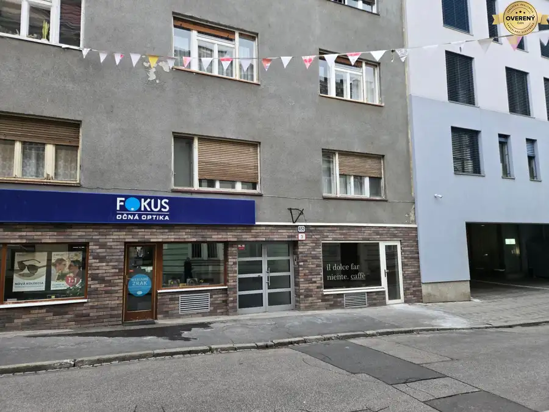
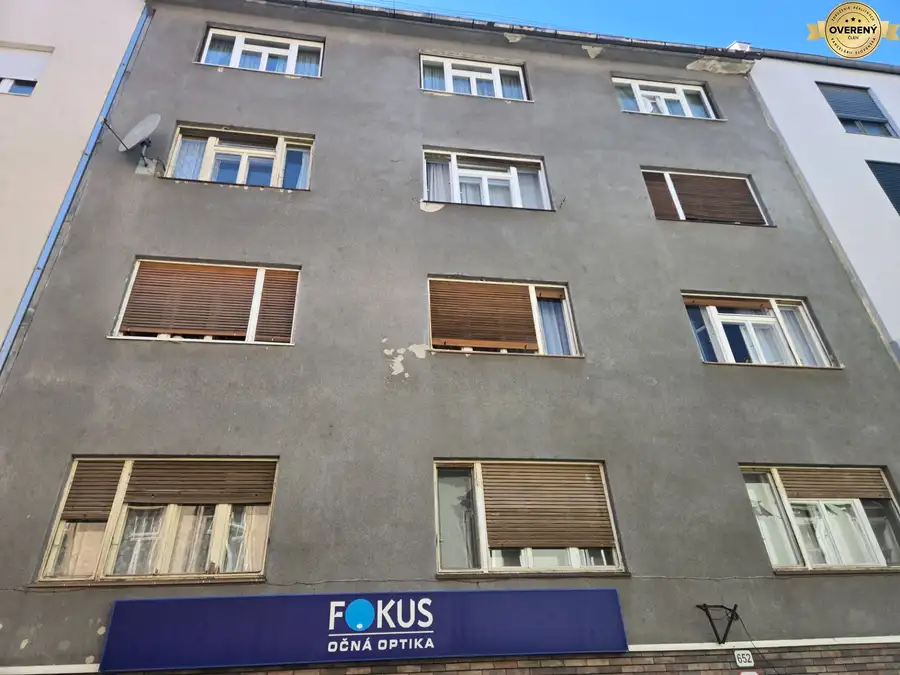
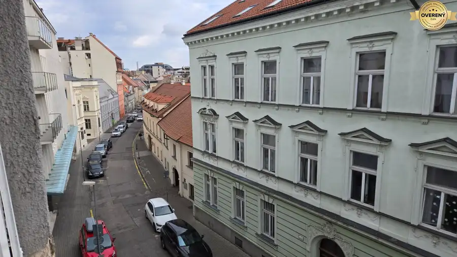

Bratislava »» Luxusný 220 m2 veľký Penthouse na predaj
Nové Mesto, Bratislava
- Dispozícia4-izbový
- Plocha220 m²
- Poschodie4.
- Energetická triedaA
O nehnuteľnosti
Z poverenia majiteľov ponúkame na predaj jedinečný penthouse, situovaný na najvyššom poschodí bytového domu, pri viniciach medzi centrom Bratislavy a mestským lesoparkom na Kolibe. Toto exkluzívne miesto je priamo pri pozemkoch vodárenského parku (vysoko chránené územie s trvalým zákazom stavať).
Byt s panoramatickými výhľadmi na všetky dominanty mesta vrátane hradu, je rozdelený na dennú a nočnú časť. Denná časť bytu zahŕňa veľkorysú halu so šatníkom s množstvom úložného priestoru, komoru a takmer 60 m2 veľkú, južne orientovanú obývaciu izbu s opticky oddelenou modernou kuchyňou a jedálenským priestorom. Jedna z dvoch kúpeľní nachádzajúca sa priamo pri vstupe do bytu obsahuje toaletu a sprchu. Nočnú časť bytu reprezentujú 3 izby s výhľadom na západ, veľkorysá druhá kúpeľňa s veľkým sprchovým kútom a atypickou vaňou disponuje oknom s unikátnym výhľadom na lesopark. Súčasťou najväčšej spálne je šatník a menší balkón orientovaný na sever. Unikátna, južne orientovaná terasa ponúka ničím nerušený výhľad na vinice, blízky park a celé centrum mesta od známej Kalvárie, cez Slavín, Bratislavský hrad až po most SNP. Profesionálny, elektronicky ovládaný systém veľkých markíz, ktorý v lete chráni pred slnečným žiarením dopĺňa 1000 litrový whirpool pre štyri osoby. Cez zimu alebo jednoducho v chladnejšom počasí je možné tretinu terasy vrátane časti s vírivkou uzavrieť. Táto časť je elektricky vyhrievaná a udržuje teplo i v zimnom období, umožňuje teda terasu využívať i v čase, keď sú ostatné terasy už nepoužiteľné. K bytu patrí jedno vonkajšie parkovacie miesto a jedno vnútorné miesto v súkromnej garáži poskytujúce dostatok možností na zaparkovanie aj väčších automobilov. Na uskladnenie bicyklov a iných športových potrieb je k dispozícii praktický uzamknuteľný skladový priestor nadštandardnej veľkosti.
Originálne miesto priamo pri chránenom území, zaujímavé panoramatické výhľady na mesto, pokoj ticho a súkromie v spojení s nevtieravým luxusom a kvalitou použitých materiálov robia z tohto penthousu unikátne miesto na život .
Pre termín dohovorenia si obhliadky a doplňujúce informácie kontaktujte prosím svojho makléra: K.Hučko Naše hodnotenie nehnuteľnosti: *****
IMPREAL - overený člen Združenia realitných kancelárií Slovenska
licencovaný člen Národnej asociácie realitných kancelárií Slovenska
www.impreal.sk
Parametre
| Celková rozloha | 220 m² |
|---|---|
| Úžitková plocha | 220 m² |
| Poschodie | 4/posledné poschodie |
| Počet izieb | 4 |
| Plyn | áno |
| Internet | wifi |
| Kúpeľňa | vaňa a sprchovací kút |
| Balkón | áno |
| Lódžia | nie |
| Terasa | áno |
| Pivnica | áno |
| Garáž | áno - 1 auto |
| Výťah | áno |
| Parkovanie | vonkajšie |
| Postavené z | tehla |
| Zariadenie | zariadený |
| Zateplený objekt | áno |
| Krb | áno |
| Klimatizácia | áno |
| Káblová televízia | áno |
| Energetický certifikát | A |
| Bezbariérový prístup | áno |
| Okná | hliníkové |
| Novostavba | áno |
| Dátum zverejnenia | 10. 10. 2020 |
Kde to je
Mohlo by Vás zaujímať

Nebytové priestory4 Cena dohodouStaré Mesto » Obchodný priestor 65m2 priamo na Panenskej Staré Mesto, Bratislava 65 m² Z poverenia majiteľa pripravujeme na predaj obchodný priestor 65 m2 na Panenskej ulici, blízko Kozej ulice. Priestor slúžil dlhé roky ako kaviareň a…
Byt10 370 000 €Staré Mesto » Prerobený 2 izbový byt na Panenskej Staré Mesto, Bratislava 2-izbový75 m² Na predaj Vám ponúkame dobre dispozične riešený 2-izbový byt na treťom poschodí bytového domu na Panenskej ulici. Byt orientovaný na dve svetové…
Byt6 335 000 €Staré Mesto » Neprerobený 2,5 izbový byt na Panenskej Staré Mesto, Bratislava 3-izbový81.36 m² Na predaj Vám ponúkame dobre dispozične riešený 2,5-izbový byt na treťom poschodí bytového domu na Panenskej ulici. Byt orientovaný na dve svetové…